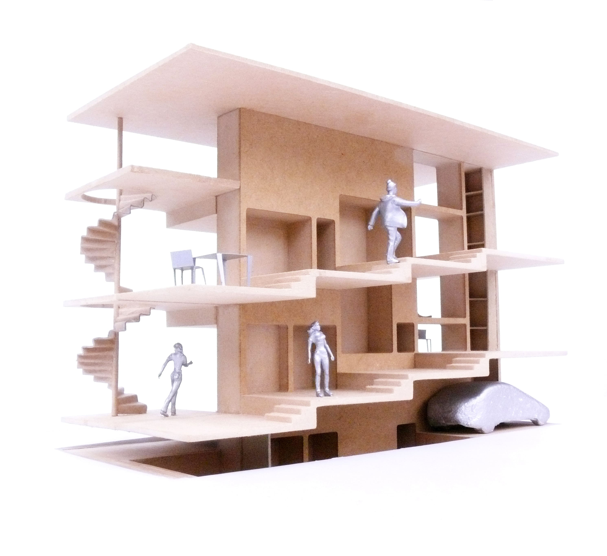
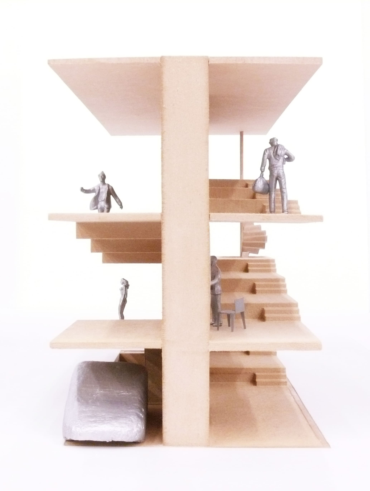
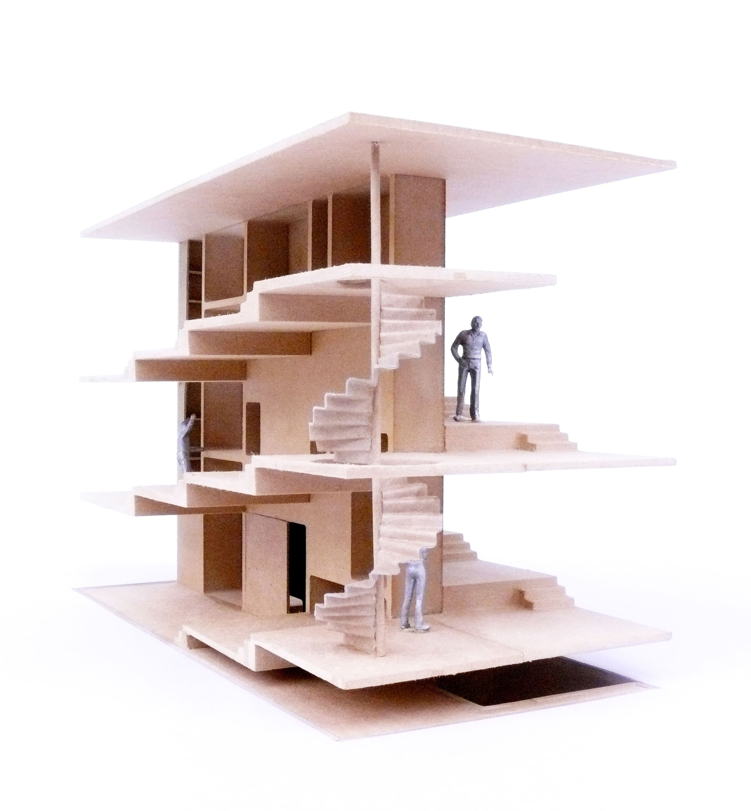
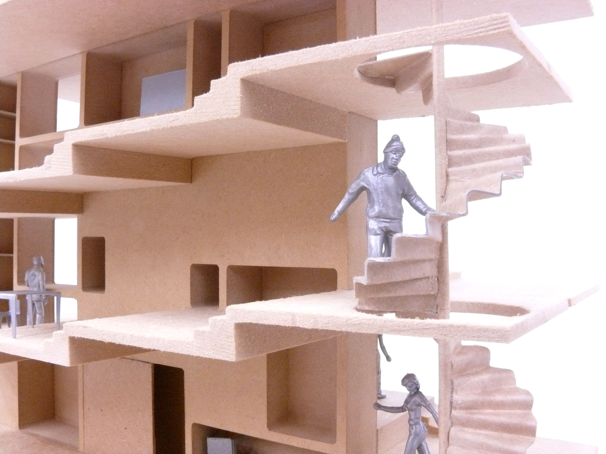
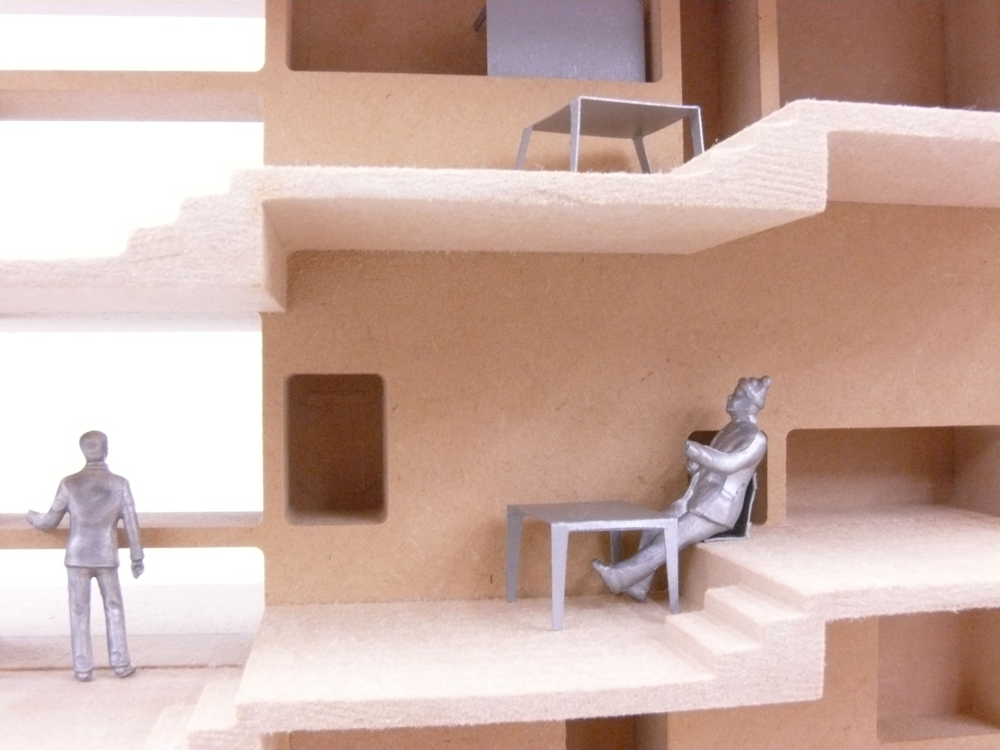
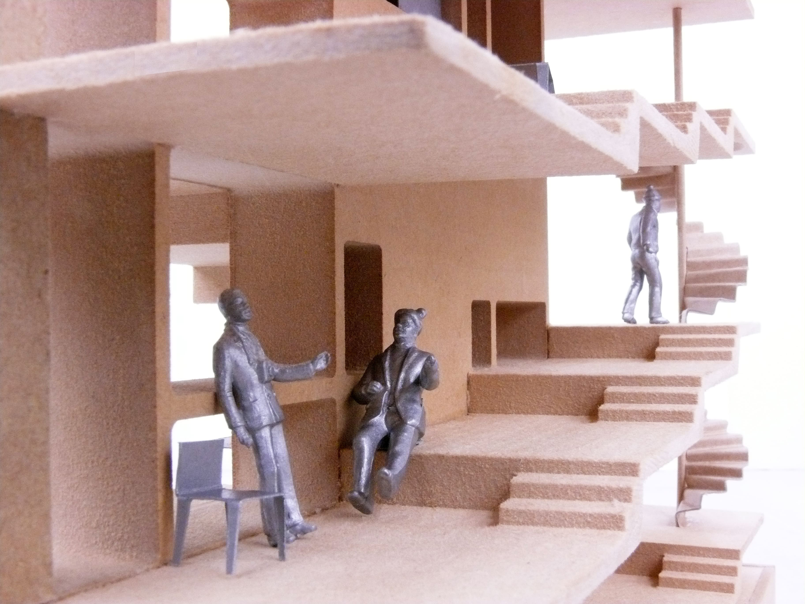
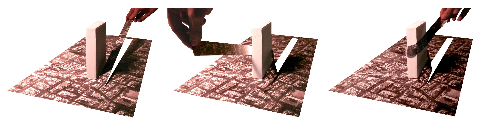
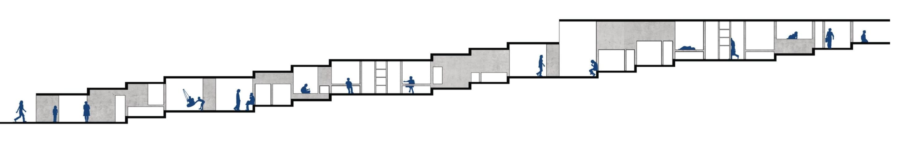
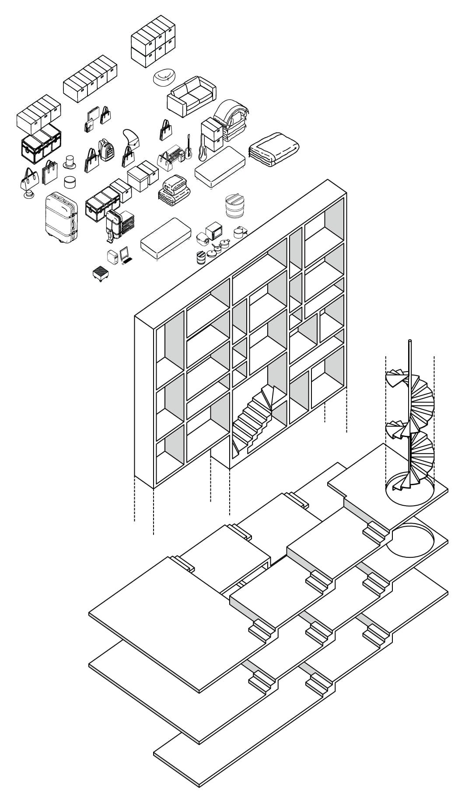
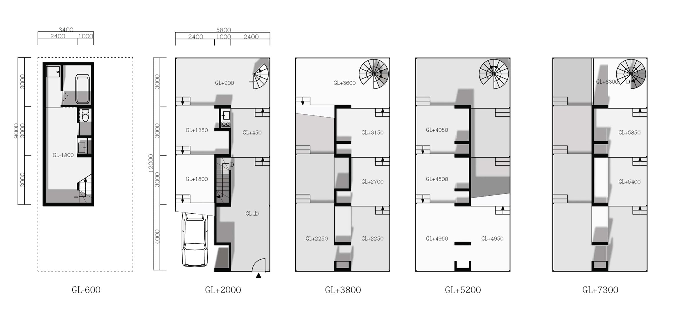

spiral house
都心にある住宅の計画。螺旋状に上昇する床と、使い方が限定されていない棚から構成されます。
住宅でありがなら、棚の内容物が働くために必要なツールであれば床はオフィスになり、売りたいものを入れればショップになります。足元はショップで、上に行くほど住宅に変化していくこともあります。
都市には住宅の機能を代替するものが溢れています。それならば、これからの住宅は住み方を規定するものではなく、空箱のような状態で使い方を発見していくようなものが自然であると考えました。
その時はもはや住宅と呼ぶのではなく、都市と互いに作用しながら使われる建築となります。









